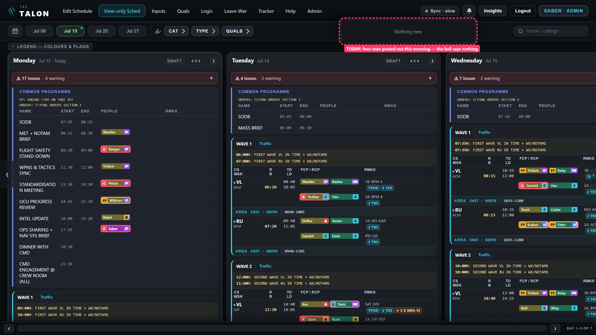
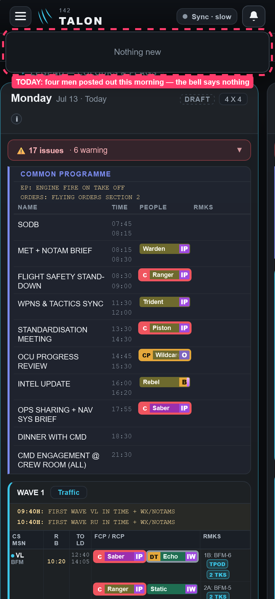
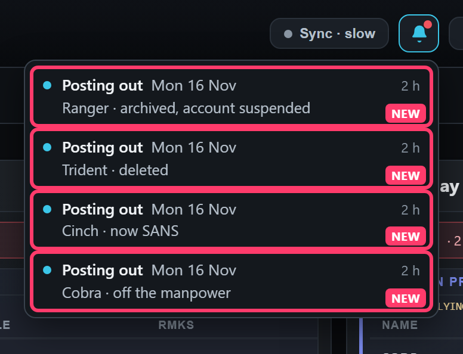
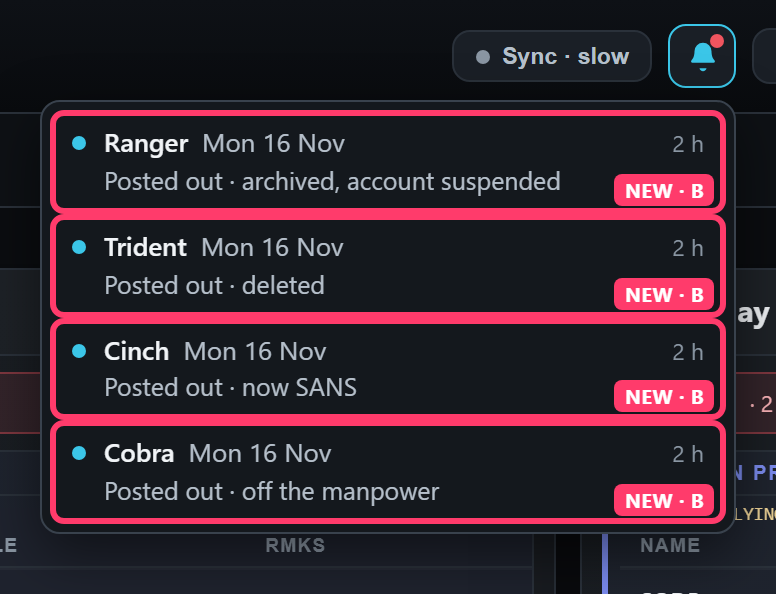
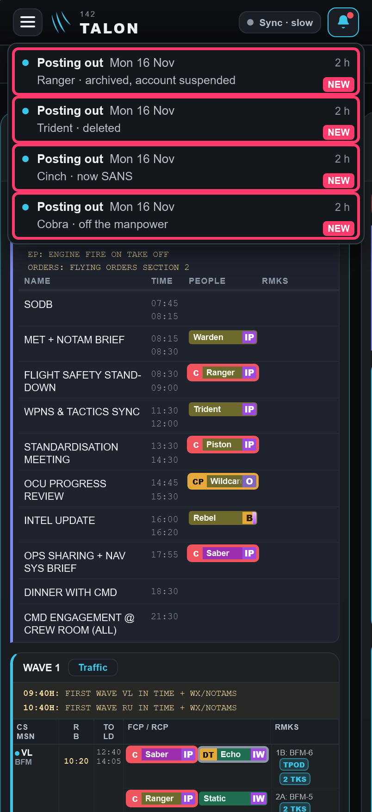
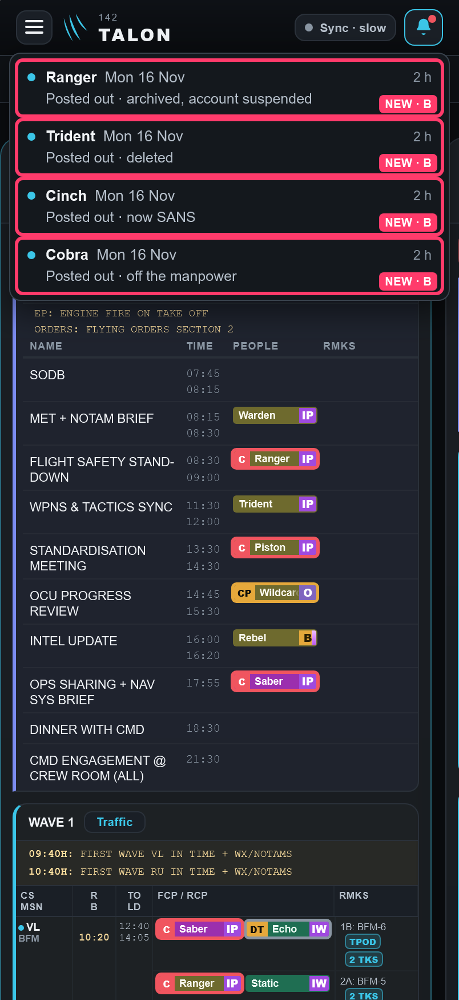
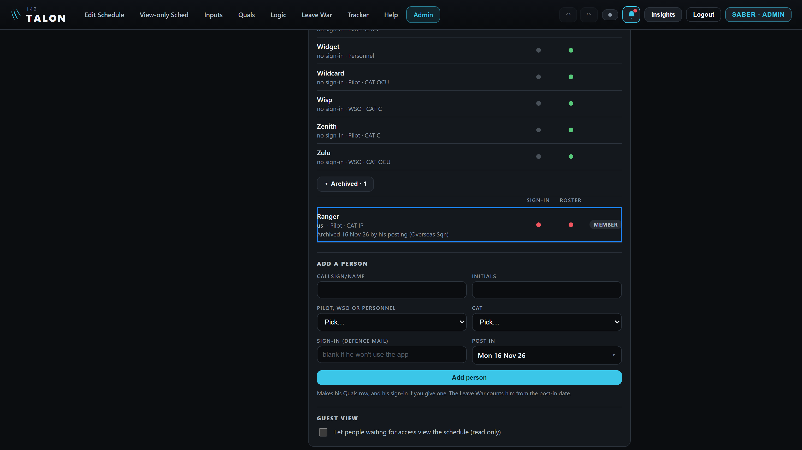
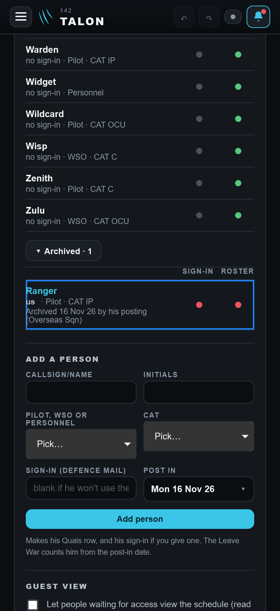
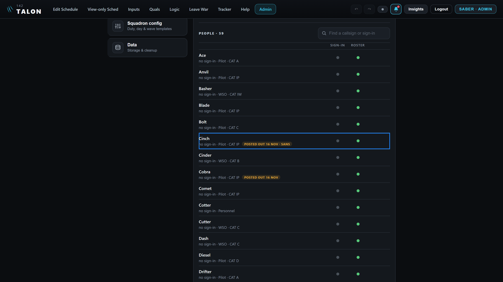
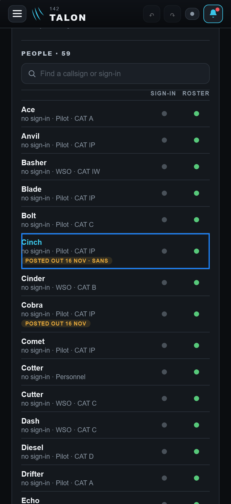

Posting out: what the admins' bells say
Drawn on the real app, 5 Nov 26. Nothing is built yet. Your ruling D1547: a posting out still runs by itself on its date, and every admin's bell now gets one line about it.
- Q2 · Which wording for the line? A: "Posting out" in bold, then the man. B: the man in bold, then "Posted out". I recommend B. Pictures ↓
- Q1 · A deleted man's line: what does a tap open? He no longer has a row on Admin → Users. I recommend: nothing. The line stays in the bell as the record. Pictures ↓
How it was drawn
On 5 Nov I posted four men out from Mon 16 Nov through the Leave War's own Post out sheet, one for each outcome. Then I moved the browser's clock to Mon 16 Nov, 08:00, and opened the app. Each posting ran by itself, as it will for you: Ranger was archived and his sign-in suspended, Trident deleted, Cinch made SANS, Cobra taken off the manpower. The red marks are mine. A dashed red box marks how the app is today; a solid red box marked NEW is a line drawn in, made from the bell's own line, unchanged in look.
| Outcome chosen at Post out | What the sheet says before | The bell line, after it runs |
|---|---|---|
| Overseas Sqn | On 16 Nov: archived, account suspended. | Ranger · archived, account suspended (a man with no sign-in reads "archived") |
| Delete | On 16 Nov the app deletes him automatically. | Trident · deleted |
| SANS | On 16 Nov: becomes SANS. | Cinch · now SANS |
| No chip | On 16 Nov: off the manpower, nothing else. | Cobra · off the manpower |
Today: the bell says nothing


Q2 · The line: two wordings
The words are the same; only what stands first in bold changes. Each line is one tap, as tall as every other bell line (measured: 52 px, the words on one line, nothing cut, on both screens).




Recommend B. When several men leave on the same day, as here, A repeats "Posting out" four times and you have to read the second line to find who. With B you see the names at a glance. The date stays beside the name either way.
Left off on purpose: who set the posting (as in "· Saber"). The app doesn't keep who set a posting, so naming them would mean saving something new. The change history already records it.
A tap on the line
A tap opens Admin → Users at his row, which wears the app's usual plain blue ring for something just added or just changed. An archived man is in the folded "▸ Archived" group, so it opens.




Q1 · A deleted man: where does the tap go?
Checked on the app: once Trident's Delete posting ran, he had no row anywhere on Admin → Users, so there's nothing to open.
Recommend: a tap does nothing, and the line stays in the bell as the record. The bell's "Deleted" line for an input already works this way: it opens nothing. The other choice is to open Admin → Users with nothing ringed, which only looks broken.
Pictures: his PC's 1536 × 864 in Chrome, his iPhone's 402 × 874 in Safari's engine, both at 2×. Tap any picture to enlarge. The script that drew them is kept with the pictures, so the build starts from it.